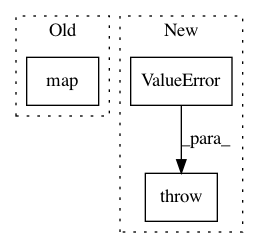

4ba63dbf0e5142603267d2e13ab0fb9762bd7151,QUANTAXIS/QAData/base_datastruct.py,_quotation_base,select_time_with_gap,#_quotation_base#Any#Any#Any#,765
Before Change
return _data.query("date<="{}"".format(time)).tail(gap).set_index(["date", "code"], drop=False)
elif self.type[-3:] in ["min"]:
return _data.data[_data.data["datetime"] <= time].tail(gap).set_index(["datetime", "code"], drop=False)
return self.new(pd.concat(list(map(lambda x: __lte(x), self.splits()))), self.type, self.if_fq)
elif method in ["e", "==", "=", "equal"]:
def __eq(_data):
if self.type[-3:] in ["day"]:
After Change
return data.loc[(pd.Timestamp(time), slice(None)), :]
return self.new(eq(self.data), self.type, self.if_fq)
else:
raise ValueError("QA CURRENTLY DONOT HAVE THIS METHODS {}".format(method))
def find_bar(self, code, time):
if len(time) == 10:
return self.dicts[(datetime.datetime.strptime(time, "%Y-%m-%d"), code)]
elif len(time) == 19:
In pattern: SUPERPATTERN
Frequency: 3
Non-data size: 3
Instances
Project Name: QUANTAXIS/QUANTAXIS
Commit Name: 4ba63dbf0e5142603267d2e13ab0fb9762bd7151
Time: 2018-06-04
Author: 604829050@qq.com
File Name: QUANTAXIS/QAData/base_datastruct.py
Class Name: _quotation_base
Method Name: select_time_with_gap
Project Name: librosa/librosa
Commit Name: 7ca0da3854c49f73bd2aae5592f1cf5a9f7177d4
Time: 2014-11-06
Author: brian.mcfee@nyu.edu
File Name: librosa/core.py
Class Name:
Method Name: note_to_midi
Project Name: biolab/orange3
Commit Name: 9189177f708e137ca7a1f6ccef0ad086bad04393
Time: 2014-12-23
Author: lan.zagar@fri.uni-lj.si
File Name: Orange/classification/__init__.py
Class Name: SklFitter
Method Name: __call__